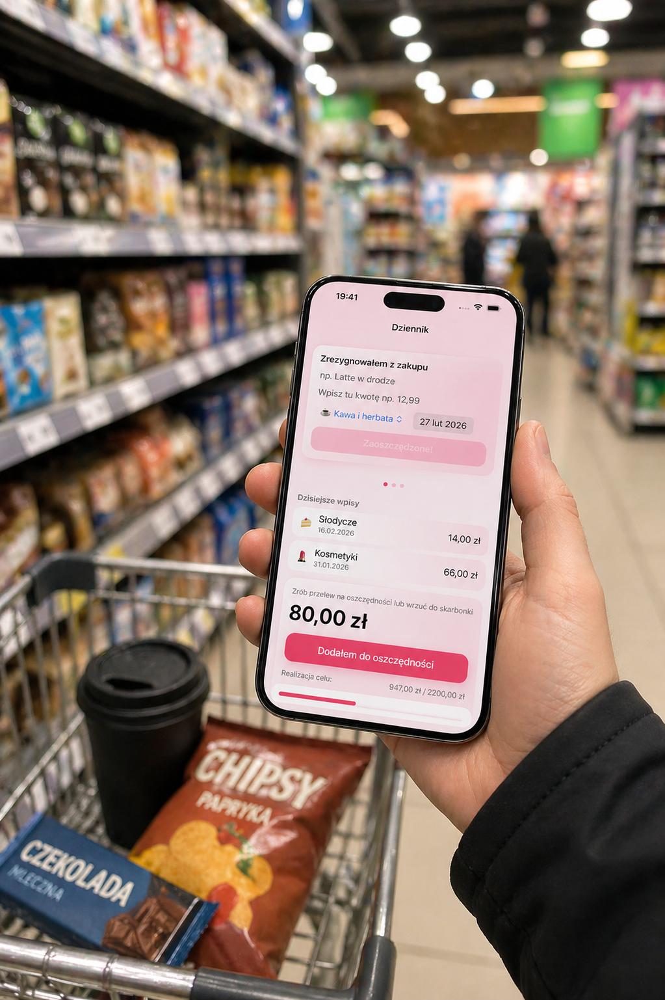

Nie kupiłeś czegoś
To jeszcze nie znaczy, że pieniądze zostały odłożone. Mogły po prostu poczekać na kolejną zachciankę.
Dziennik oszczędności, który nie wierzy w wymówki
Nie kupiłeś czegoś za 20 zł? Świetnie. Ale jeśli tych 20 zł naprawdę nie odłożysz, to prawdopodobnie wydasz je później na coś innego. Chrumek pomaga zamieniać takie codzienne decyzje w realne oszczędności.

Dopiero realny przelew liczy się do postępu.
Problem
Chrumek łapie moment, w którym dobra decyzja zakupowa powinna zamienić się w konkretne działanie: przelew na konto oszczędnościowe, gotówkę w kopercie albo monetę w skarbonce.
To jeszcze nie znaczy, że pieniądze zostały odłożone. Mogły po prostu poczekać na kolejną zachciankę.
Różnica w cenie może być oszczędnością, ale tylko wtedy, gdy faktycznie ją odłożysz.
Świetny ruch. Teraz trzeba jeszcze dopilnować, żeby ta kwota nie rozpłynęła się w budżecie.
Jak działa Chrumek
W Chrumku wpis najpierw trafia do Dziennika jako kwota „do przelania”. Dopiero kiedy naprawdę odłożysz pieniądze, potwierdzasz to w aplikacji. Wtedy wpis przechodzi do Historii i zaczyna liczyć się do celów, statystyk oraz wykresów.
 assets/app-journal.png
assets/app-journal.png
 assets/app-history.png
assets/app-history.png

Rytuał
Nie kupiłeś czegoś za 19 zł? Przelej 19 zł na konto oszczędnościowe albo wrzuć do skarbonki. Chrumek jest po to, żeby ten mały moment nie przepadł w codziennym chaosie.
„Chrumek wierzy w przelewy, nie w intencje.”
Korzyści
Mniej udawania, że samo „nie kupiłem” buduje oszczędności. Więcej prostych, powtarzalnych działań, które faktycznie zostawiają pieniądze po Twojej stronie.
Postęp rośnie tylko od pieniędzy, które faktycznie odłożyłeś.
Każda mała decyzja kończy się konkretnym ruchem, nie tylko dobrym samopoczuciem.
Wiesz, co jeszcze czeka na przelanie, a co jest już naprawdę w oszczędnościach.
Cel nie rośnie od deklaracji, tylko od odłożonych pieniędzy.
Aplikacja
Dziennik, Historia, Cele i Wykresy pomagają pilnować realnego odkładania. Bez udawania aplikacji bankowej, bo świnka nie musi nosić garnituru.
Dziennik Cel
Cel Wykresy
WykresyPrywatność
Chrumek działa bez konta i bez śledzenia użytkownika. To dziennik oszczędności, nie kolejna maszyna do zbierania danych o tym, że w środę prawie kupiłeś drożdżówkę.
Zapisz pierwszą oszczędność, odłóż kwotę i pozwól Chrumkowi policzyć tylko to, co naprawdę trafiło do oszczędności.
Pobierz z App Store